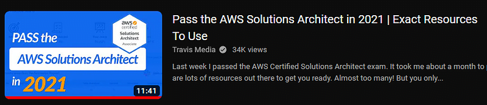
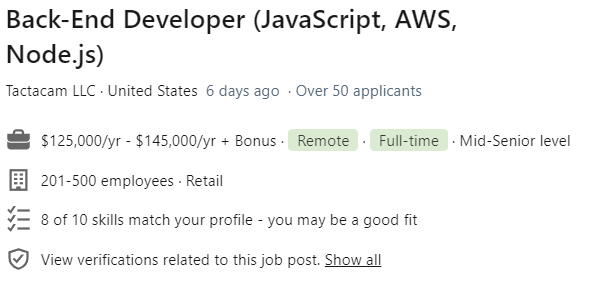
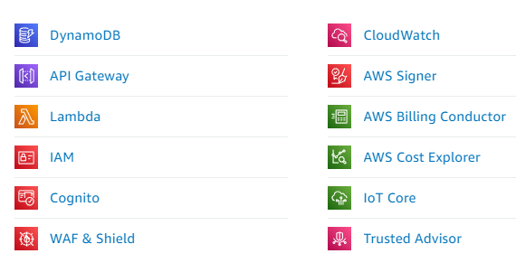
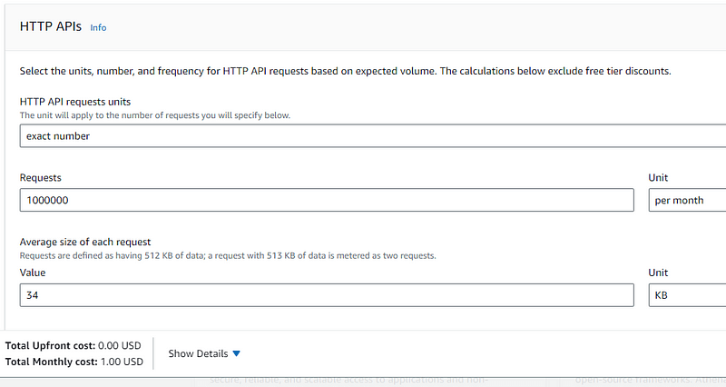
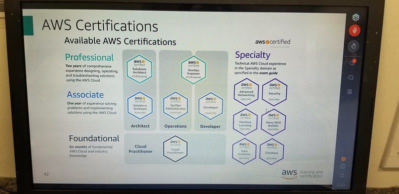

This full course on AWS is meant to give you a true understanding of the cloud system while preparing you for the Cloud Practitioner exam.
When finishing this course I honestly felt much more confident and capable of creating scalable applications on Amazon Web Services.
I am pleasantly surprised with how useful and powerful is AWS. With the right knowledge and skills we can create entire enterprises pretty quickly.
This course focuses on the actual systems & automations of AWS and less on code.
And while it is good and possible to create applications more or less only using AWS, code itself is irreplaceable.
With the course author Stephane Maarek you will not find yourself writing any code.
Perhaps the most difficult part of AWS is integrating code and AWS automation properly.
This is only made possible by knowing both the AWS system really well and being able to write advanced code at the same time.
While Stephane does not cover coding, the knowledge of AWS will be highly useful to you.
As you grow as a coder you will find AWS is a wonderful addition to your skillset.
After the course I was still not ready for the exam
During the course I focused on learning AWS, not passing the exam.
I think this is the best way to learn AWS. To learn AWS well and not just pass the exam.
Travis Media in his YouTube review of AWS states many hiring managers and senior developers don't particularly like Cloud certifications.
They believe it puffs up new developers and gives new developers the sense they know more than they actually do.
The concern is they memorized how to pass the exam and did not actually come to understand AWS.
I can see this argument and I agree.
If we take a course on AWS just to pass the exam and come to memorize lists of concepts just for the sake of passing, we will fall into this stereotype.
In his YouTube video Travis concludes we absolutely benefit from having a certificate and advises new coders should still get the certificate.

As we follow and complete a course we should not just pass the exam but truly learn AWS systems as well as possible.
It took me a while...
It took me 5 months off and on to finish this course.
The best and more fun part were the hands on portions of the Udemy course.
The first half included a lot of hands on.
But, when I started the second half I found myself often getting bored and having a hard time concentrating.
Stephane did not do as much hands on in the second half and I found myself taking week long breaks due to boredom.
During this time while applying to jobs, I saw many job descriptions requiring AWS certifications for junior positions I wanted.
Eventually I got fed up applying for jobs without having the certification and started to hunker down and go through the second half, despite the lack of hands on.
I started taking notes and often used them to review during lectures.
When I finally finished the course I took the end practice exam bombed it with a 54% out of 100.
Thoroughly, I was disappointed with the results.
I still felt I knew AWS very well at this point but my learning was simply not optimized for the exam.
I still need Whizlabs
Travis Media expressed the same sentiment in his AWS videos.
He also bombed the practice exams after finishing his Udemy course but felt he learned AWS very well.
To remediate this he recommends Whizlabs after the course...
According to Travis, Whizlabs is a standard study tool for many certification exams and comes at a very cheap price.
They give many practice exams often with 1/4 coupons and discounts.
Now, after finishing the Udemy course I am practicing with Whiz labs and improving my scores with every practice exam.
With the platform I was able to get 8 practice exams and a topic focused series of videos for $17.
The focus of Whizlabs is to simply pass the exam.
Very much worth it in my opinion.
The Udemy course was more for learning AWS and Whizlabs was more for passing the exam.
I believe it is best to have both.
I could not make projects until the second half
Perhaps the most difficult part of getting to the second half of the Udemy course was how expensive AWS seemed.
I would often think of great projects for AWS but felt I could not implement them due to pricing.
Without some framework for estimating pricing ahead of time I could not implement projects due to fear of cost.
I remember starting out several years ago.
I created a simple website over AWS and 2 weeks later was charged $17 for literally doing nothing.
I had no idea where the charge was coming from and I absolutely dreaded AWS for any personal project.
Once ever 1 or 2 years I would try to make a project on AWS and would get charged these seemingly random amounts.
At the time I concluded AWS was a terrible platform to get started and stayed away from it.
The billing section
It wasn't until I got to the billing section of the course in the second half that I finally received a framework for truly choosing the cheapest methods for using AWS.
After the billing section I created a small application using AWS automation and was able to know with certainty my application would cost mere cents per millions of requests.
This was what I needed to know.
After all these years, I finally can use AWS in my personal projects.
The reason Stephane saved the billing and pricing section for the second half was because we need to know most of the services and principles of cloud systems before a pricing framework would make sense.
We basically use a cost estimator and put together a bunch of services and their usage to estimate an overall cost on our account.
But, how can we predict pricing if we don't know what the individual automations do or how they work?
Now, with this new found knowledge, I can finally estimate every project I make with a list of services before even coding it up.
You can do most things through the free tier
If done properly you can finish most things through the free tier on AWS.
It lasts a year and gives you a starting usage balance with many services.
You can get a free tiny virtual machine instance for about a year and many other services come with free usage.
I feel it is enough to learn with for both the cloud practitioner and architect exams.
It is also enough for personal projects.

I have also found it possible to restart the free tier with a new Amazon account. Though I don't know if that will be possible in the future.
If, after some time you run out of the free tier you may be able to just re-register under a new email.
For just personal projects, after the billing section of the Udemy course it is possible to make mostly anything without worry of being over charged.
The biggest issue with the cost estimator service with AWS is you don't know what you know.
The cost estimator gives you an assortment of services you can use and scaling costs based on the values you put into it.
Its seemingly impossible to figure out without actually knowing how AWS works and how each of the services works.
Even without the free tier, if this cost estimator is used properly you should find yourself spending under $5 per month for good sized personal projects.
Perhaps the only fear I have with this is making public end points and some malicious user spamming my endpoint to make my AWS service begin costing money.
Which certification is best to start?
There are 12 AWS certifications you can get.
Foundational is the easiest and associate, professional and specialty are more difficult.
If this is your first cloud system and/or you are a new coder, I recommend Cloud Practitioner.
Many YouTube influencers talking about cloud systems will tell you the foundational certification is not a real competitive certification for employment.
They say it is just a start and we should get at least the Associate level.
Often they recommend Architect and say this is the actual starting certification.
In addition you can get the Architect Associate certification and skip Cloud Practitioner all together.
But, I have found the Architect Associate exam is very very difficult.
Since I have never learned a cloud system, I had to learn everything from the foundation.
Me, personally, Cloud practitioner was tough enough as is.
I would rather start with something foundational and just get the entry certification then afterward go associate.
The Udemy course author, Stephane, says this in his course and I feel this is good advice.
But, if you are already an advanced user of cloud systems you may find the architect certification is more suitable.
Anywho, I hope you learned something...
Happy coding!
Resources
The Udemy course: https://www.udemy.com/course/aws-certified-cloud-practitioner-new/
Why full courses are awesome: Do Full Courses Really Help You Become a Great Coder?